Personal skills
Images & Graphics
- Illustrator
- Adobe XD
- 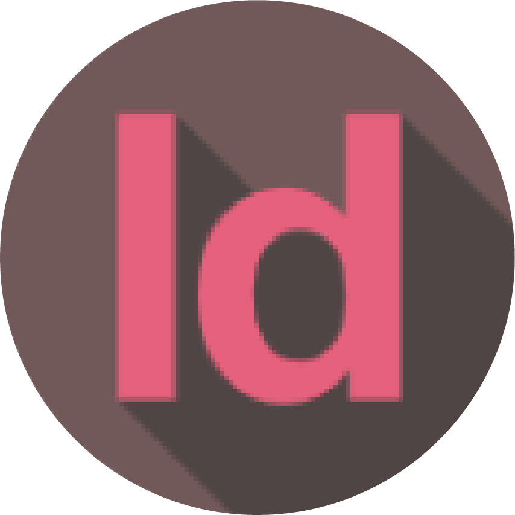 Indesign
- 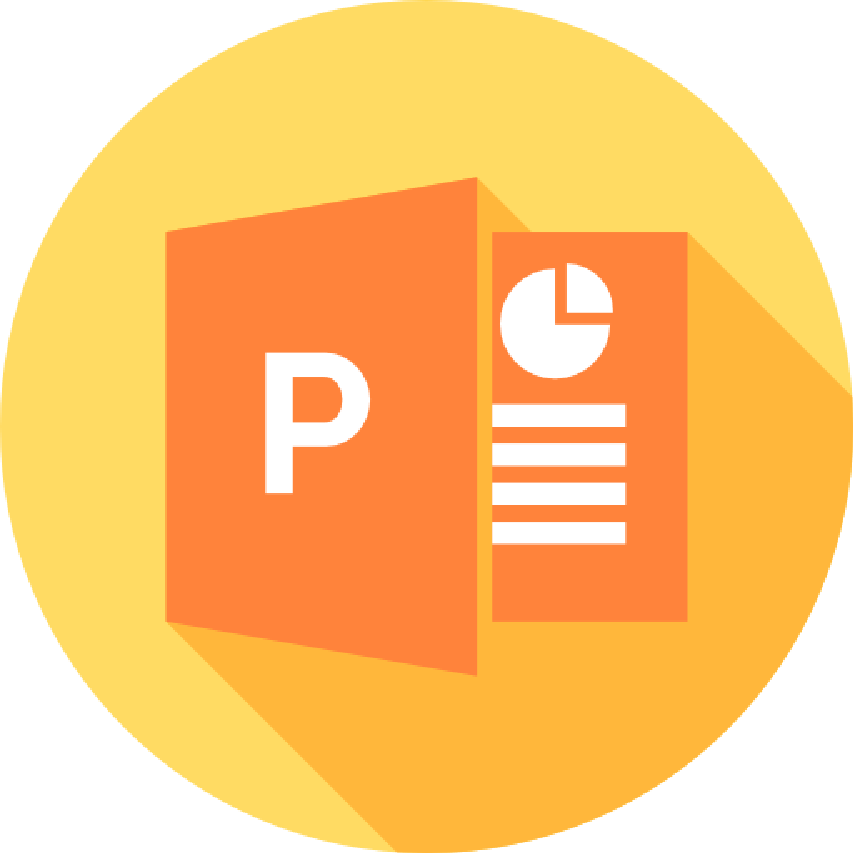 PowerPoint
- Word
- 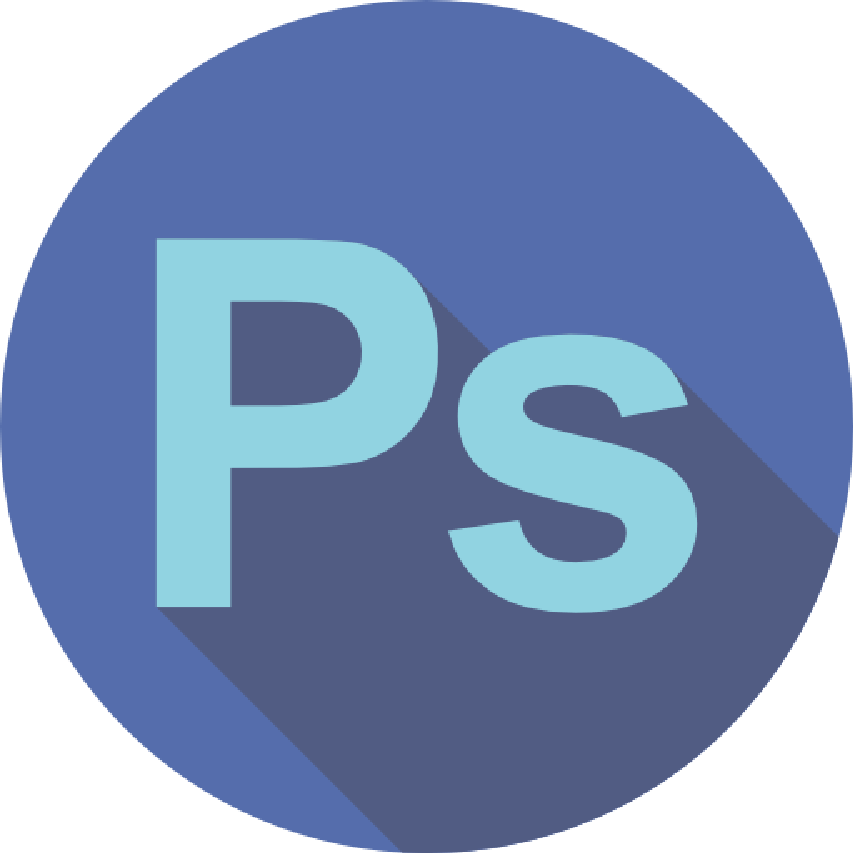 Photoshop
- Premiere
- 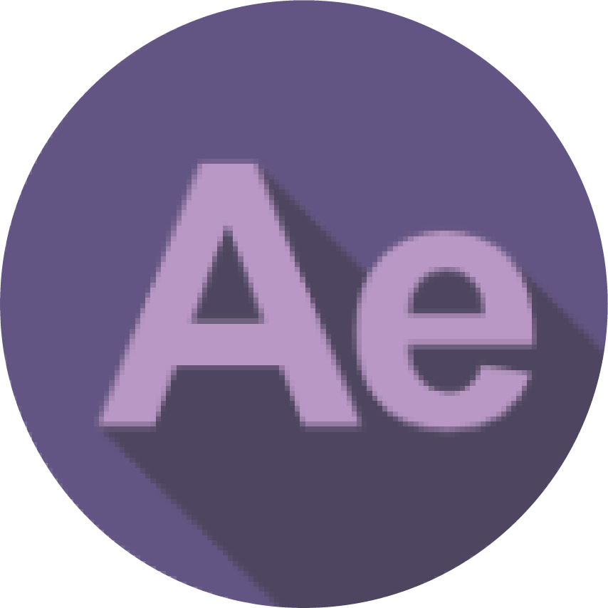 After Effect
Coding
- Dreamweaver
- 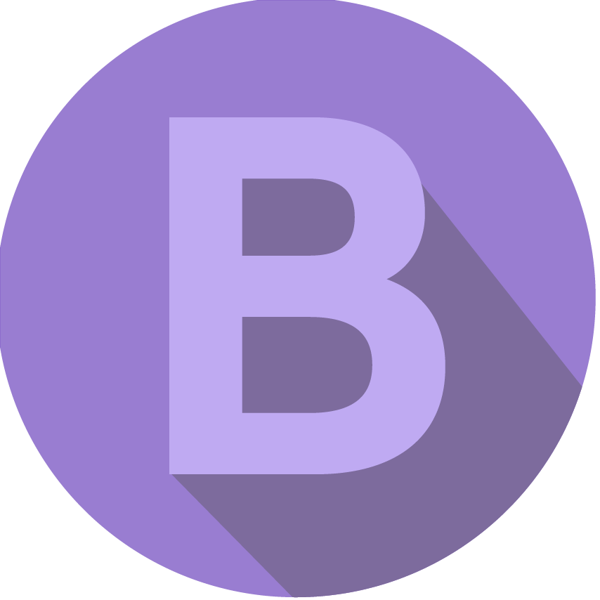 Bootstrap
- 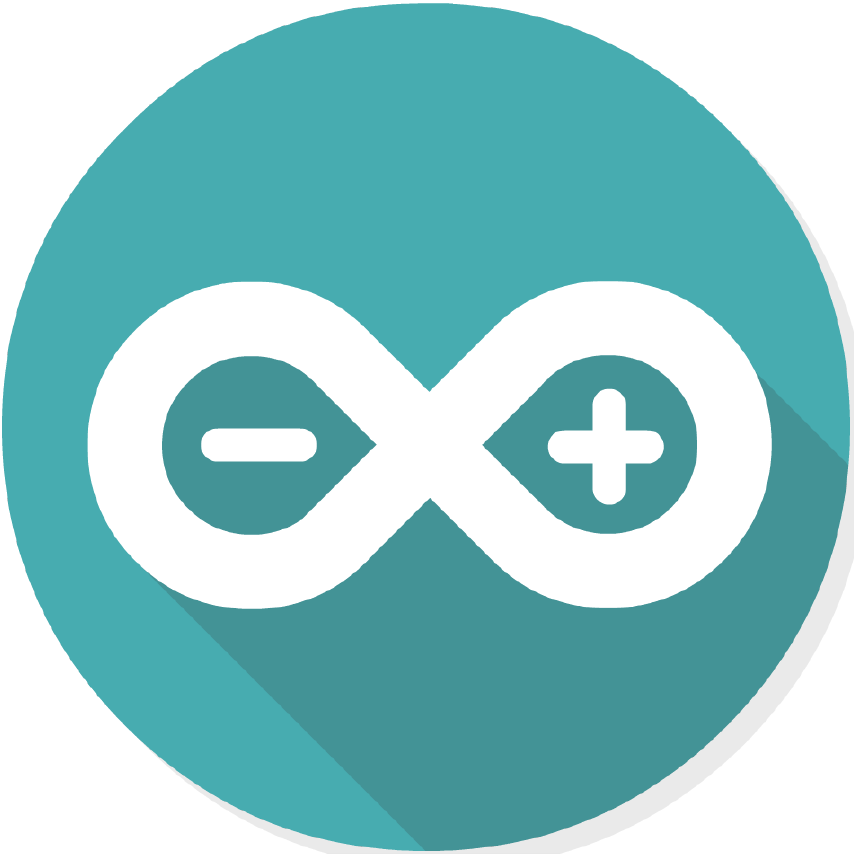 Arduino
- 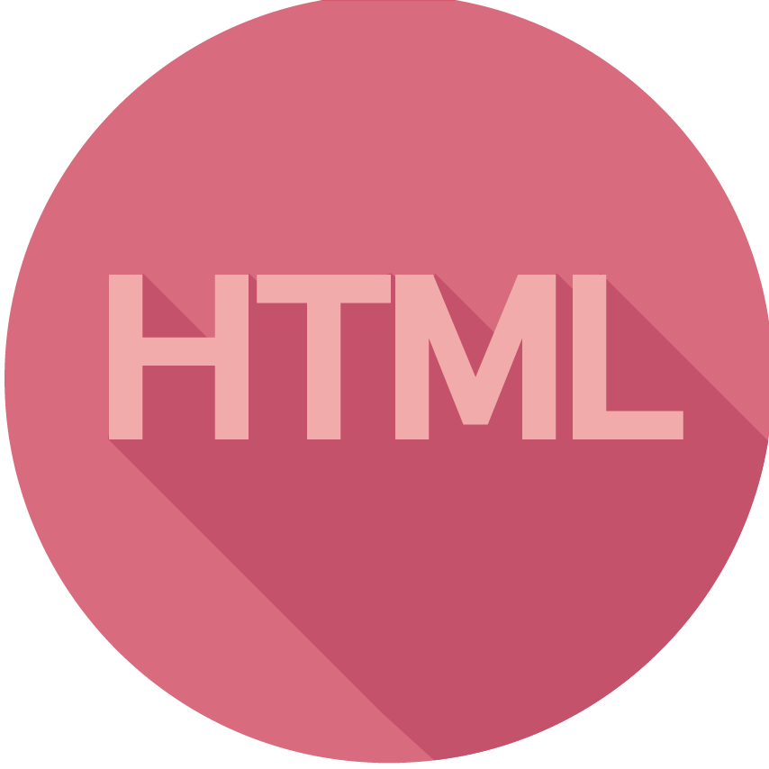 HTML
- 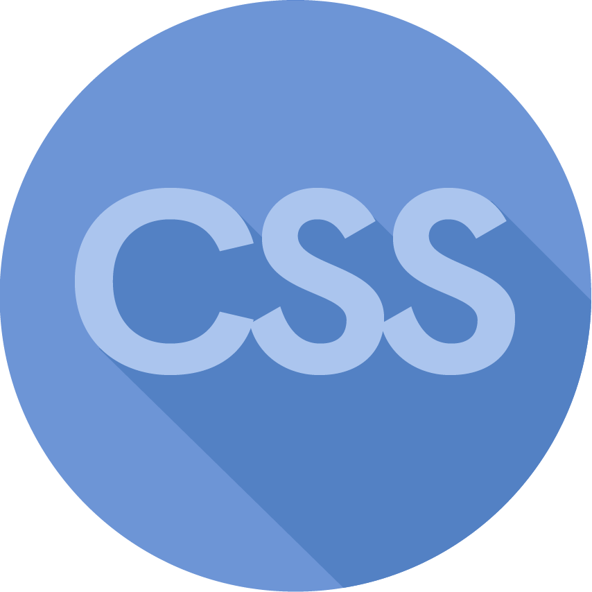 CSS
-
 Javascript
Javascript
- Wordpress
- 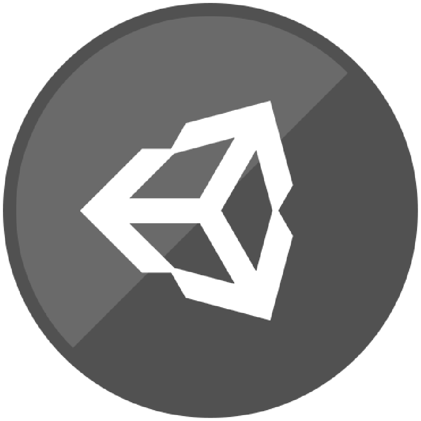 Unity
3D models, renders and 3D printing
- Inventor
- Dimension
- 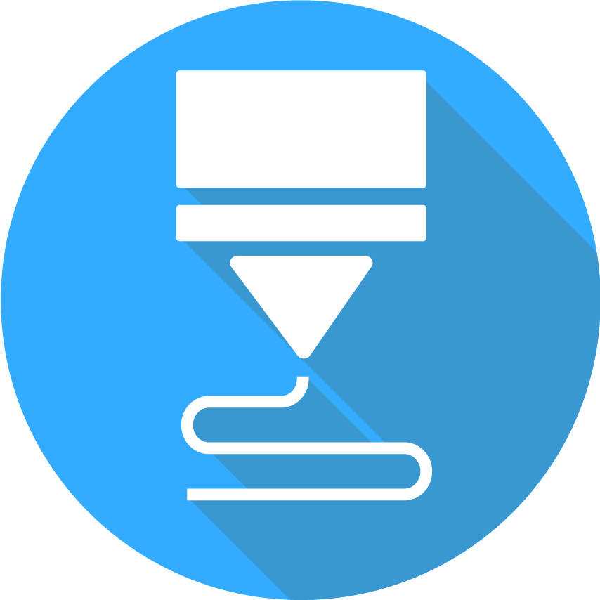 3D printing
- 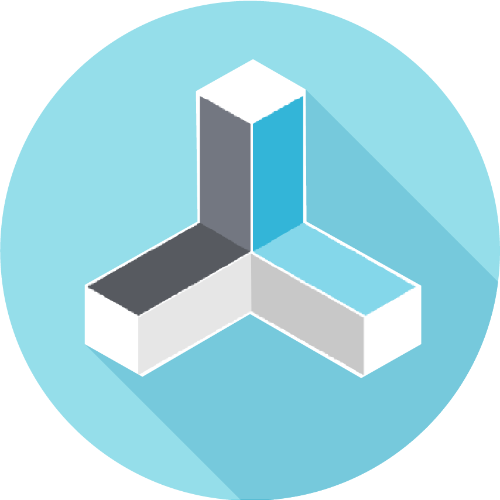 RepetierHost
- 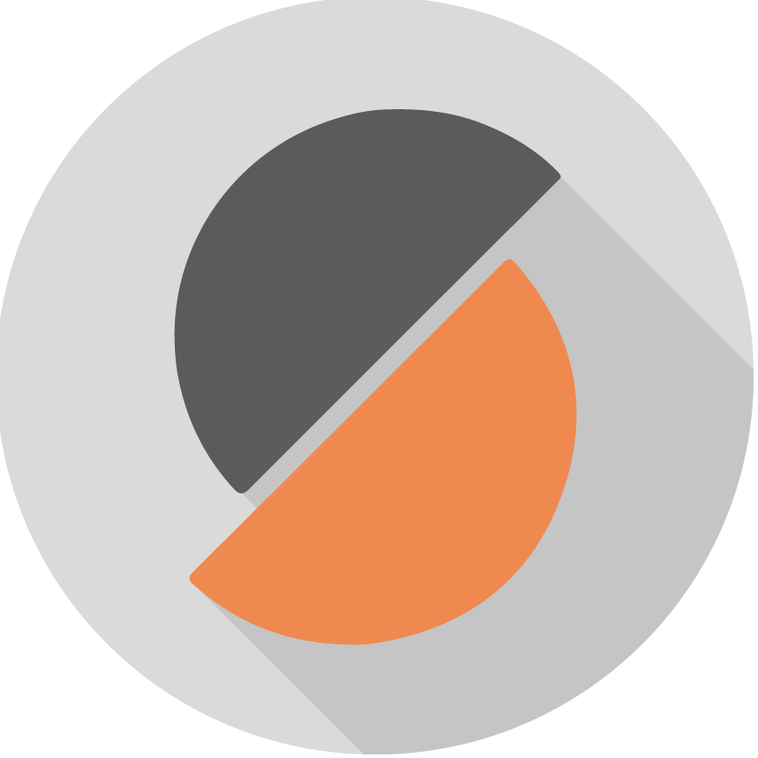 Slic3r
- Keyshot
Soft skills
- Good written and spoken communication skills
- Highly organized and efficient
- Ability to work indipendently or as a part of a team
- Great complex problem solving ability
- Ability of critical thinking and decision making
- Flexibility and creativity
 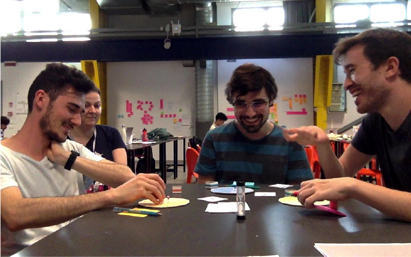
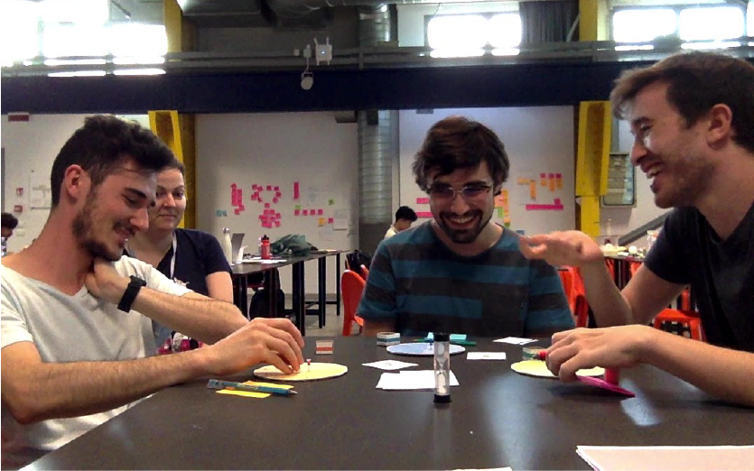